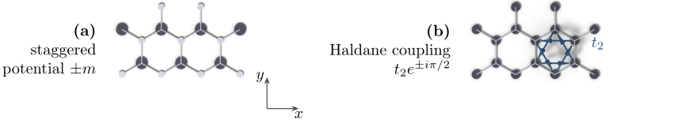
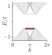

Advanced Quantum Materials 2027 · All lectures · Lecture notes
Session 3. Topological Band Structure Theory
3.13 Closing summary
In this session we started from the Bloch Hamiltonian of Section 2.5 and from the Dirac cone of graphene of Section 2.11, and we asked what happens when the cone gets a gap. The answer is in the wavefunctions and not in the energies, and we saw it in the following steps.

The Hall conductivity, computed with linear response theory from the wavefunction expansion (3.1), becomes an integral of the Berry curvature over the Brillouin zone. For any gapped system it is quantized to an integer, the Chern number, so that \(\sigma_{xy} = C\,e^2/h\) (3.4).
The quantum Hall state realizes this with flat Landau-level bands, and each of them gives Chern number \(1\). The bulk gap forces the current onto chiral edge states, with one direction per edge, which is why they cannot backscatter and why the plateaus are quantized so sharply, as we saw in Section 3.6.
Topology classifies Hamiltonians by whether their band structures can be continuously deformed into each other without closing the gap. The Chern number is the invariant of this classification, and an interface between regions with different Chern numbers must have a gapless state, which is the general bulk-boundary correspondence of Section 3.7.
The SSH model is the minimal one-dimensional realization. Its \(2\times 2\) Bloch Hamiltonian (3.5) has a lower-band Zak phase (3.6) of \(0\) in the trivial phase and \(\pi\) in the topological phase. The phase depends on whether the intracell hopping is larger or smaller than the intercell hopping, and the topological phase has protected zero-energy modes at the ends of the chain.
A lattice with a massive Dirac equation (3.7) gives Chern number \(\tfrac12\, \mathrm{sgn}(m)\,\mathrm{sgn}(\lambda)\) for each Dirac point (3.8). Whether the contributions of Dirac points related by time reversal cancel or add depends only on how the mass term transforms under time reversal. This is what separates the trivial gap of a staggered sublattice potential from a real Chern insulator, which is the Haldane model. This is the answer to the opening question of the session, which was what happens when we open a gap in the Dirac cone of the honeycomb lattice.
If we put together two copies of (3.7) with opposite masses, one for each spin, time-reversal symmetry is preserved (\(C=0\)) and the spin Chern number \(C_s=\pm2\) stays non-trivial (3.9). This is the quantum spin Hall insulator, with helical edge states that are protected by Kramers degeneracy and not by a broken symmetry.
The same invariants apply beyond electrons, for example to magnons, and also beyond quantum mechanics, to any system with a dispersion relation.
In Session 4 we take the flat-band case of Section 2.10 in full. We will derive the Landau levels from the start, see the integer quantum Hall effect as a set of filled bands with \(C=1\), and build the fractional quantum Hall state.
After this session we can do the following tasks, and each of them has the section that teaches it.
- Write the Hall conductivity of an insulator as a sum over filled and empty bands, and say why the band energies drop out of it. This is in Section 3.4 and Section 3.5.
- Compute a Chern number on a k-mesh and say when the mesh is too coarse. This is in Section 3.5.
- Count the chiral edge states in the spectrum of a ribbon, and say on which edge each of them sits. This is in Section 3.6b.
- Say where a gapless state must appear when two regions with different invariants are joined. This is in Section 3.7.
- Compute the Zak phase of the SSH chain from its Bloch Hamiltonian, and predict if the chain has zero modes at its ends. This is in Section 3.9c and Section 3.9b.
- Decide if the two Dirac points of the honeycomb lattice add or cancel, from how the mass term transforms under time reversal. This is in Section 3.10 and Section 3.10b.
- Tell a helical edge from a chiral one in the spectrum of a ribbon, and say which perturbation opens a gap in it. This is in Section 3.11 and Section 3.11b.
Each gapped Dirac point of the honeycomb lattice has the Chern number
\[C_{\text{Dirac}} = \frac{1}{2}\,\mathrm{sgn}(m)\,\mathrm{sgn}(\lambda).\]
Here \(m\) is its mass and \(\lambda=\pm1\) is its chirality. The chirality is opposite at the two points. What decides whether the two points cancel or add?
Show the answers
- A. ✗ False
This is false. The Chern number is a dimensionless integer. Rescaling the lattice constant from \(a\) to \(2a\) changes neither the staggered potential, with \(C=0\), nor the Haldane coupling, with \(C=\pm1\).
- B. ✗ False
This is false. A staggered potential \(0.5\,t\) gives the gap \(1.0\,t\), and a Haldane coupling \(t_2=0.1\,t\) gives the gap \(6\sqrt{3}\,t_2\approx1.04\,t\). The two masses have about the same size, but the first one gives \(C=0\) and the second one gives \(C=\pm1\).
- C. ✓ True
This is true. A staggered potential is even under time reversal and gives the same mass at both valleys, so the half-integers cancel. The Haldane coupling is odd under time reversal, so the half-integers add.

Figure 3.5, one panel shown again. The two lattices. Left, the staggered potential, which is even under time reversal. Right, the Haldane second-neighbor hopping, which is odd.
One edge of a quantum spin Hall insulator has two states inside the gap. They cross, they move in opposite directions and they have opposite spin. Which symmetry protects this crossing?
Show the answers
- A. ✗ False
This is false. A Rashba coupling breaks the conservation of \(s_z\). On a ribbon with a Rashba coupling \(0.1\,t\) the two edge states are still degenerate at \(k=\pi\), since time-reversal symmetry holds.
- B. ✓ True
This is true. The two states are partners under time reversal, and at a time-reversal invariant momentum they are degenerate. This holds even when spin is not conserved.
- C. ✗ False
This is false. Take a ribbon with a random potential on every site, with values between \(-0.5\,t\) and \(0.5\,t\), the same for both spins. It breaks the translations, and the edge spectrum has no gap. A random exchange field of the same size breaks time reversal. When it has a component in the plane, it opens gaps of order \(0.1\,t\) to \(0.4\,t\) in the edge spectrum, which change with the realization.
The Hall conductivity of an insulator is
\[\sigma_{xy} = \frac{e^2}{h}\,C.\]
On one edge, \(|C|\) counts the branches in one direction minus the others. Each picture shows the bands of a ribbon against the momentum \(k\). The states of the lower edge are in color. Red is spin up and blue is spin down. Which ribbon has \(|\sigma_{xy}|=2e^2/h\)?



Show the answers
- A. ✓ True
This is true. The lower edge has two branches inside the gap, one of each spin, and both have the same sign of the slope. So two branches move in the same direction and \(|C|=2\). This ribbon has the Haldane coupling for both spins.
- B. ✗ False
This is false. The two branches of the lower edge have opposite slopes, so the count is \(1-1=0\) and \(\sigma_{xy}=0\). This is the helical edge of a quantum spin Hall insulator, with \(C_\uparrow=1\) and \(C_\downarrow=-1\) up to a common sign.
- C. ✗ False
This is false. No branch crosses the gap, so the count is \(0\) and \(\sigma_{xy}=0\). This ribbon has a staggered sublattice potential \(0.45\,t\), which gives an ordinary insulator.
- In Section 4.4 the Chern number is applied to the Landau levels, and in Section 4.19 the Haldane model is connected to the quantum Hall state.
- In Session 5 the SSH chain gives the Kitaev chain of Section 5.16, and in Section 5.18 a quantum spin Hall insulator becomes a topological superconductor.
- In Section 6.16 magnon bands have a Chern number and chiral magnon edge modes.
- In Section 9.3 linear response is derived again in detail, and in Section 9.8 a vacancy detects the topology of the bulk.
- In Section 10.6 the Chern number and the Zak phase are the examples of phases that no local order parameter can separate.